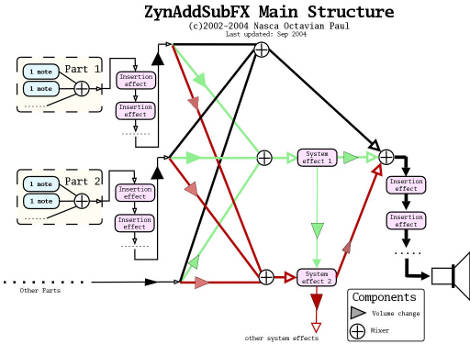
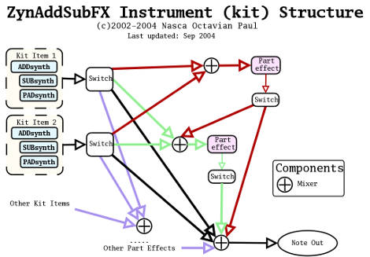
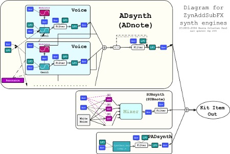

ZynAddSubFX components
Important: All indexes of Midi Channels, Parts, Effects starts from 0, so, for example, the first Part is 0.
Below is a picture that represents the components of ZynAddSubFX
synthesizer.
 click
here for bigger version
ZynAddSubFX components:
1) Parts - they receive the note messages from Midi Channels. You may assign a part to any channel. A part can store only one instrument. "Add.S" represents ADsynth and "Sub.S" is SUBsynth.
2) Insertion Effect - theese effect applies only to one part; you can any number of insertion effects for one part, but the number of theese cannot be bigger NUM_INS_EFX.
3) Part Mixer - it mixes all parts
4) System Effects - They applies to all parts, you can set how much signal is routed through a system effect.
5) Master mixer - It mixes all outputs of Parts Mixer and System Effects.
The ideea of this synthesis model is from another
synthesizer wrote by me years ago, relased on the Internet and named "Paul's
Sound Designer". Of course this model is more advanced than the "Paul's
Sound Designer" (adding SUBsynth, more LFO's/Envelopes, etc.) but the ideea
is the same.
The picture represents the synthesizer module component.
The continous lines are the signal routing, and the dotted lines are frequency
controlling signals (they controls the frequency of something). The dashed
lines controls the bandwidths of bandpass filters. "Env" are the envelopes,
"LFO" the Low Frequency Oscillators, "BPF" are band pass filters, "bw"
are the band width of BPF.
If you use instrument kits, the "note out" represents the kit's item
out.
 click
here for bigger version
 click
here for bigger version
Click here to download the
source code of the diagrams for Dia 0.90
{kind=link}
{kind=link}
{kind=link}